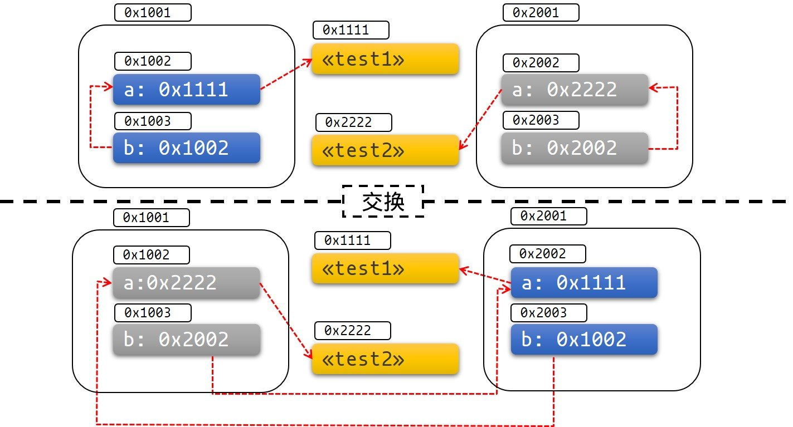

固定
要轮询期物（future），它们必须被一种名为 Pin<T> 的特殊类型固定（pin）。如果你阅读了上一节 “执行Future和任务“ 中对 Future特征（trait） 的解释，那么你会认出Pin早已在Future::poll的定义里出现过了（self: Pin<&mut Self>）。但这个Pin意味着什么？我们为什么需要Pin呢？
为何固定
Pin与Unpin标记一起工作。固定可以保证实现了!Unpin的对象永远不会被移动。要理解为什么这是必要的，我们需要回顾一下 async/.await 是如何工作的。请考虑以下代码：
let fut_one = /* ... */;
let fut_two = /* ... */;
async move {
fut_one.await;
fut_two.await;
}在幕后，这会创建一个实现了Future的匿名类型，并提供一个类似这样的poll方法：
// 由我们的 `async { ... }` 块生成的 `Future` 类型
struct AsyncFuture {
fut_one: FutOne,
fut_two: FutTwo,
state: State,
}
// 我们的 `async` 块可能处于的状态
enum State {
AwaitingFutOne,
AwaitingFutTwo,
Done,
}
impl Future for AsyncFuture {
type Output = ();
fn poll(mut self: Pin<&mut Self>, cx: &mut Context<'_>) -> Poll<()> {
loop {
match self.state {
State::AwaitingFutOne => match self.fut_one.poll(..) {
Poll::Ready(()) => self.state = State::AwaitingFutTwo,
Poll::Pending => return Poll::Pending,
}
State::AwaitingFutTwo => match self.fut_two.poll(..) {
Poll::Ready(()) => self.state = State::Done,
Poll::Pending => return Poll::Pending,
}
State::Done => return Poll::Ready(()),
}
}
}
}当第一次调用 poll 时，它会轮询 fut_one。如果 fut_one 无法完成，AsyncFuture::poll 将返回。后续对 poll 的调用将从上一次调用结束的地方继续。这一过程将持续进行，直到期物（future）成功完成。
然而，如果我们有一个使用引用的 async 块会发生什么呢？例如：
async {
let mut x = [0; 128];
let read_into_buf_fut = read_into_buf(&mut x);
read_into_buf_fut.await;
println!("{:?}", x);
}这将会被编译成什么结构体呢？
struct ReadIntoBuf<'a> {
buf: &'a mut [u8], // 指向下方的 `x`
}
struct AsyncFuture {
x: [u8; 128],
read_into_buf_fut: ReadIntoBuf<'what_lifetime?>,
}在这里，ReadIntoBuf期物持有一个对我们结构体中另一个字段x的引用。然而，如果AsyncFuture被移动，x的位置也会随之移动，从而使存储在read_into_buf_fut.buf中的指针失效。
将期物固定在内存中的特定位置可以避免这个问题，使得在async块中创建对值的引用变得安全。
深入理解固定
让我们通过一个稍微简单一些的例子来理解固定。我们在上面遇到的问题，归根结底是我们如何在Rust中处理自引用类型的引用的问题。
接下来，我们的例子将如下所示：
#[derive(Debug)]
struct Test {
a: String,
b: *const String,
}
impl Test {
fn new(txt: &str) -> Self {
Test {
a: String::from(txt),
b: std::ptr::null(),
}
}
fn init(&mut self) {
let self_ref: *const String = &self.a;
self.b = self_ref;
}
fn a(&self) -> &str {
&self.a
}
fn b(&self) -> &String {
assert!(!self.b.is_null(), "Test::b called without Test::init being called first");
unsafe { &*(self.b) }
}
}Test 提供了获取字段 a 和 b 的值引用的方法。b 是对 a 的引用，但Rust的借用规则不允许我们定义这种生命周期；因此，我们将其存储为指针。现在，我们得到了一个所谓的自引用结构体。
如果我们不移动数据，那么这个例子运行起来是良好的。你可以通过运行此示例来观察：
fn main() { let mut test1 = Test::new("test1"); test1.init(); let mut test2 = Test::new("test2"); test2.init(); println!("a: {}, b: {}", test1.a(), test1.b()); println!("a: {}, b: {}", test2.a(), test2.b()); } #[derive(Debug)] struct Test { a: String, b: *const String, } impl Test { fn new(txt: &str) -> Self { Test { a: String::from(txt), b: std::ptr::null(), } } // We need an `init` method to actually set our self-reference fn init(&mut self) { let self_ref: *const String = &self.a; self.b = self_ref; } fn a(&self) -> &str { &self.a } fn b(&self) -> &String { assert!(!self.b.is_null(), "Test::b called without Test::init being called first"); unsafe { &*(self.b) } } }
结果符合我们的预期：
a: test1, b: test1
a: test2, b: test2让我们看看如果我们将 test1 与 test2 交换，从而移动数据，会发生什么：
fn main() { let mut test1 = Test::new("test1"); test1.init(); let mut test2 = Test::new("test2"); test2.init(); println!("a: {}, b: {}", test1.a(), test1.b()); std::mem::swap(&mut test1, &mut test2); println!("a: {}, b: {}", test2.a(), test2.b()); } #[derive(Debug)] struct Test { a: String, b: *const String, } impl Test { fn new(txt: &str) -> Self { Test { a: String::from(txt), b: std::ptr::null(), } } fn init(&mut self) { let self_ref: *const String = &self.a; self.b = self_ref; } fn a(&self) -> &str { &self.a } fn b(&self) -> &String { assert!(!self.b.is_null(), "Test::b called without Test::init being called first"); unsafe { &*(self.b) } } }
天真地看，我们可能会认为我们应该像这样两次获得 test1 的调试打印：
a: test1, b: test1
a: test1, b: test1但实际上我们获得的：
a: test1, b: test1
a: test1, b: test2test2.b 的指针仍然指向旧的位置，该位置现在位于 test1 之内。这个结构体不再是自引用的，它持有的是指向不同对象中某个字段的指针。这意味着我们不能继续认为 test2.b 的生命周期与 test2 的生命周期绑定在一起。
如果你仍然不相信，那么接下来的内容至少应该能够说服你：
fn main() { let mut test1 = Test::new("test1"); test1.init(); let mut test2 = Test::new("test2"); test2.init(); println!("a: {}, b: {}", test1.a(), test1.b()); std::mem::swap(&mut test1, &mut test2); test1.a = "I've totally changed now!".to_string(); println!("a: {}, b: {}", test2.a(), test2.b()); } #[derive(Debug)] struct Test { a: String, b: *const String, } impl Test { fn new(txt: &str) -> Self { Test { a: String::from(txt), b: std::ptr::null(), } } fn init(&mut self) { let self_ref: *const String = &self.a; self.b = self_ref; } fn a(&self) -> &str { &self.a } fn b(&self) -> &String { assert!(!self.b.is_null(), "Test::b called without Test::init being called first"); unsafe { &*(self.b) } } }
下图可以帮助你更直观地了解发生了什么：
图1: 在交换前后 
很容易让这个程序展示出未定义行为，并以其他惊人的方式失败。
实践中的固定
让我们看看固定和Pin类型如何帮助我们解决这个问题。
Pin类型包装了指针类型，保证在指针后面的值不会被移动，前提是这些值没有实现Unpin。例如，Pin<&mut T>、Pin<&T>、Pin<Box<T>>都保证了T在T: !Unpin的情况下不会被移动。
大多数类型在被移动时不会有问题。这些类型实现了一个称为Unpin的特征。指向Unpin类型的指针可以被自由地放入或从Pin中取出。例如，u8是Unpin，因此Pin<&mut u8>的行为就像一个普通的&mut u8。
然而，那些在被固定后不能被移动的类型有一个标记，叫做!Unpin。由async/await创建的期物就是一个例子。
固定到栈上
回到我们的例子。我们可以通过使用Pin来解决我们的问题。让我们来看看如果我们的指针被固定，我们的例子会是什么样子：
use std::pin::Pin;
use std::marker::PhantomPinned;
#[derive(Debug)]
struct Test {
a: String,
b: *const String,
_marker: PhantomPinned,
}
impl Test {
fn new(txt: &str) -> Self {
Test {
a: String::from(txt),
b: std::ptr::null(),
_marker: PhantomPinned, // 它将我们的类型设为 `!Unpin`
}
}
fn init(self: Pin<&mut Self>) {
let self_ptr: *const String = &self.a;
let this = unsafe { self.get_unchecked_mut() };
this.b = self_ptr;
}
fn a(self: Pin<&Self>) -> &str {
&self.get_ref().a
}
fn b(self: Pin<&Self>) -> &String {
assert!(!self.b.is_null(), "Test::b called without Test::init being called first");
unsafe { &*(self.b) }
}
}如果我们的类型实现了 !Unpin，那么把对象固定到栈上将始终是 unsafe 的。你可以使用类似于 pin_utils 这样的板条箱（crate）来避免在将对象固定到栈上时需要自己编写 unsafe 代码。
在下面的代码中，我们将对象 test1 和 test2 固定到栈上：
pub fn main() { // 在将其初始化之前，`test1` 是可以被安全地移动的 let mut test1 = Test::new("test1"); // 注意我们是如何将 `test1` 遮蔽以防止其被再次访问的 let mut test1 = unsafe { Pin::new_unchecked(&mut test1) }; Test::init(test1.as_mut()); let mut test2 = Test::new("test2"); let mut test2 = unsafe { Pin::new_unchecked(&mut test2) }; Test::init(test2.as_mut()); println!("a: {}, b: {}", Test::a(test1.as_ref()), Test::b(test1.as_ref())); println!("a: {}, b: {}", Test::a(test2.as_ref()), Test::b(test2.as_ref())); } use std::pin::Pin; use std::marker::PhantomPinned; #[derive(Debug)] struct Test { a: String, b: *const String, _marker: PhantomPinned, } impl Test { fn new(txt: &str) -> Self { Test { a: String::from(txt), b: std::ptr::null(), // 它将我们的类型设为 `!Unpin` _marker: PhantomPinned, } } fn init(self: Pin<&mut Self>) { let self_ptr: *const String = &self.a; let this = unsafe { self.get_unchecked_mut() }; this.b = self_ptr; } fn a(self: Pin<&Self>) -> &str { &self.get_ref().a } fn b(self: Pin<&Self>) -> &String { assert!(!self.b.is_null(), "Test::b called without Test::init being called first"); unsafe { &*(self.b) } } }
现在，如果我们尝试移动数据，将会得到一个编译错误：
pub fn main() { let mut test1 = Test::new("test1"); let mut test1 = unsafe { Pin::new_unchecked(&mut test1) }; Test::init(test1.as_mut()); let mut test2 = Test::new("test2"); let mut test2 = unsafe { Pin::new_unchecked(&mut test2) }; Test::init(test2.as_mut()); println!("a: {}, b: {}", Test::a(test1.as_ref()), Test::b(test1.as_ref())); std::mem::swap(test1.get_mut(), test2.get_mut()); println!("a: {}, b: {}", Test::a(test2.as_ref()), Test::b(test2.as_ref())); } use std::pin::Pin; use std::marker::PhantomPinned; #[derive(Debug)] struct Test { a: String, b: *const String, _marker: PhantomPinned, } impl Test { fn new(txt: &str) -> Self { Test { a: String::from(txt), b: std::ptr::null(), _marker: PhantomPinned, // 它将我们的类型设为 `!Unpin` } } fn init(self: Pin<&mut Self>) { let self_ptr: *const String = &self.a; let this = unsafe { self.get_unchecked_mut() }; this.b = self_ptr; } fn a(self: Pin<&Self>) -> &str { &self.get_ref().a } fn b(self: Pin<&Self>) -> &String { assert!(!self.b.is_null(), "Test::b called without Test::init being called first"); unsafe { &*(self.b) } } }
如下所示，类型系统阻止我们移动这些数据：
error[E0277]: `PhantomPinned` cannot be unpinned
--> src\test.rs:56:30
|
56 | std::mem::swap(test1.get_mut(), test2.get_mut());
| ^^^^^^^ within `test1::Test`, the trait `Unpin` is not implemented for `PhantomPinned`
|
= note: consider using `Box::pin`
note: required because it appears within the type `test1::Test`
--> src\test.rs:7:8
|
7 | struct Test {
| ^^^^
note: required by a bound in `std::pin::Pin::<&'a mut T>::get_mut`
--> <...>rustlib/src/rust\library\core\src\pin.rs:748:12
|
748 | T: Unpin,
| ^^^^^ required by this bound in `std::pin::Pin::<&'a mut T>::get_mut`
需要注意的是，栈内固定总是依赖于你在编写
unsafe代码时所提供的保证。尽管我们知道&'a mut T的指向内容在'a的生命周期内是被固定的，但我们无法确定&'a mut T所指向的数据在'a结束后是否不会被移动。如果数据确实被移动了，那么这就违反了固定契约。一个容易犯的错误是忘记遮蔽原始变量，因为你可能会在
&'a mut T之后丢弃Pin并移动数据，如下面所示（这违反了固定契约）：fn main() { let mut test1 = Test::new("test1"); let mut test1_pin = unsafe { Pin::new_unchecked(&mut test1) }; Test::init(test1_pin.as_mut()); drop(test1_pin); println!(r#"test1.b points to "test1": {:?}..."#, test1.b); let mut test2 = Test::new("test2"); mem::swap(&mut test1, &mut test2); println!("... and now it points nowhere: {:?}", test1.b); } use std::pin::Pin; use std::marker::PhantomPinned; use std::mem; #[derive(Debug)] struct Test { a: String, b: *const String, _marker: PhantomPinned, } impl Test { fn new(txt: &str) -> Self { Test { a: String::from(txt), b: std::ptr::null(), // 它将我们的类型设为 `!Unpin` _marker: PhantomPinned, } } fn init<'a>(self: Pin<&'a mut Self>) { let self_ptr: *const String = &self.a; let this = unsafe { self.get_unchecked_mut() }; this.b = self_ptr; } fn a<'a>(self: Pin<&'a Self>) -> &'a str { &self.get_ref().a } fn b<'a>(self: Pin<&'a Self>) -> &'a String { assert!(!self.b.is_null(), "Test::b called without Test::init being called first"); unsafe { &*(self.b) } } }
固定到堆上
将一个!Unpin类型固定到堆上可以为我们的数据提供一个稳定的地址，这样我们就可以确定数据在被固定后不会再移动。与固定到栈上相比，我们知道数据将在对象的生命周期内保持固定。
use std::pin::Pin; use std::marker::PhantomPinned; #[derive(Debug)] struct Test { a: String, b: *const String, _marker: PhantomPinned, } impl Test { fn new(txt: &str) -> Pin<Box<Self>> { let t = Test { a: String::from(txt), b: std::ptr::null(), _marker: PhantomPinned, }; let mut boxed = Box::pin(t); let self_ptr: *const String = &boxed.a; unsafe { boxed.as_mut().get_unchecked_mut().b = self_ptr }; boxed } fn a(self: Pin<&Self>) -> &str { &self.get_ref().a } fn b(self: Pin<&Self>) -> &String { unsafe { &*(self.b) } } } pub fn main() { let test1 = Test::new("test1"); let test2 = Test::new("test2"); println!("a: {}, b: {}",test1.as_ref().a(), test1.as_ref().b()); println!("a: {}, b: {}",test2.as_ref().a(), test2.as_ref().b()); }
有些函数要求它们处理的期物必须是Unpin。要在需要Unpin类型的函数中使用非Unpin的Future或Stream，首先需要使用Box::pin（以创建Pin<Box<T>>）或pin_utils::pin_mut!宏（以创建Pin<&mut T>）来固定该值。Pin<Box<Fut>>和Pin<&mut Fut>都可以作为期物使用，并且它们都实现了Unpin。
举例来说：
use pin_utils::pin_mut; // `pin_utils` 是一个可在 crates.io 上获取的便捷板条箱（crate）。
// 一个接受实现了 `Unpin` 的 `Future` 的函数
fn execute_unpin_future(x: impl Future<Output = ()> + Unpin) { /* ... */ }
let fut = async { /* ... */ };
execute_unpin_future(fut); // Error: `fut` does not implement `Unpin` trait
// 使用 `Box` 固定:
let fut = async { /* ... */ };
let fut = Box::pin(fut);
execute_unpin_future(fut); // OK
// 使用 `pin_mut!` 固定:
let fut = async { /* ... */ };
pin_mut!(fut);
execute_unpin_future(fut); // OK总结
-
如果
T: Unpin（这是默认的情况），那么Pin<'a, T>完全等同于&'a mut T。换句话说：Unpin表示即使类型被固定，仍然可以移动该类型，因此Pin对这种类型不会产生任何影响。 -
如果
T: !Unpin，则获取一个指向固定的T的&mut T需要使用unsafe。 -
大多数标准库类型都实现了
Unpin。同样，Rust 中你遇到的大多数“普通”类型也是如此。通过async/await生成的Future是这一规则的例外。 -
你可以在夜间（nightly）版本中通过特性标志为类型添加
!Unpin限制，或者在稳定版本中通过在类型中添加std::marker::PhantomPinned来实现这一点。 -
你可以将数据固定到栈上或堆上。
-
将一个
!Unpin对象固定到栈上需要使用unsafe。 -
将一个
!Unpin对象固定到堆上不需要使用unsafe。可以使用Box::pin作为一种快捷方式来实现这一点。 -
对于
T: !Unpin的已固定数据，你必须保持其内存在从固定开始到调用 drop 之前不被无效化或重新分配。这是 固定契约 的重要部分。